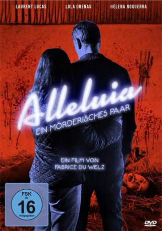

#5804 Alleluia - Ein mörderisches Paar
 
 IMDB-Wertung: 6.2 / 10
IMDB-Wertung: 6.2 / 10  Metascore: 0
Metascore: 0 
Die Spanierin Gloria verdient ihr Geld damit, Leichen zu waschen. Mit der Zärtlichkeit, die sie sich selbst wünscht, säubert sie die nackten toten Körper. Es gab wohl einmal einen Mann, der ihr ziemlich wehgetan hat. Auf den Fotos aus dieser Zeit ist sein Gesicht mit Hass und Sorgfalt herausgekratzt worden. Erst ein Date mit Michel zeigt ihr wieder, was Liebe ist. Das Lächeln, das ihr der dubiose Schuhfetischist auf die Lippen zaubert, gilt es nun mit allen Mitteln zu verteidigen. Erst recht, als Gloria erfährt, dass ihr neuer Freund sich darauf spezialisiert hat, alleinstehenden Frauen seine Liebe zu geben und im Gegenzug ihr Geld zu nehmen.
Jahr: 2014
Dauer: 93 Minuten
FSK: 16
Land: Belgien Studio: Neue Pierrot Le FouTonspuren:
Untertitel: Deutsch,
Auflösung: 1080p (1920x816) Größe: 6707 MB
Genre: Thriller, Horror, Krimi, Liebe
Regisseur: Fabrice Du Welz
Drehbuch: Georges Simenon
Soundtrack:
Darsteller:
 Lola Dueñas als Gloria
Lola Dueñas als Gloria- Laurent Lucas als Michel Bellmer
 Héléna Noguerra als Solange
Héléna Noguerra als Solange- Stéphane Bissot als Madeleine
- David Murgia als Père Luis
- Édith Le Merdy als Marguerite
- Anne-Marie Loop als Gabriella
- Pili Groyne als Eve
- Sorenza Mollica als Monique
- Lara Persain als Voix chanteuse / Caissière cinéma
- Renaud Rutten als Le réceptionniste , scenes deleted
- Philippe Résimont als Homme Fritkot , scenes deleted
Datei: X:\2014(A-F)\Alleluia - Ein mörderisches Paar (2014, FSK16, 1920x816).mkv seit 23.03.2017
Festplatte: HD 2013(I-Z)-2014(A-Z)
 Es gibt insgesamt 119 Filme in der Gruppe '2014(A-F)'
Es gibt insgesamt 119 Filme in der Gruppe '2014(A-F)'